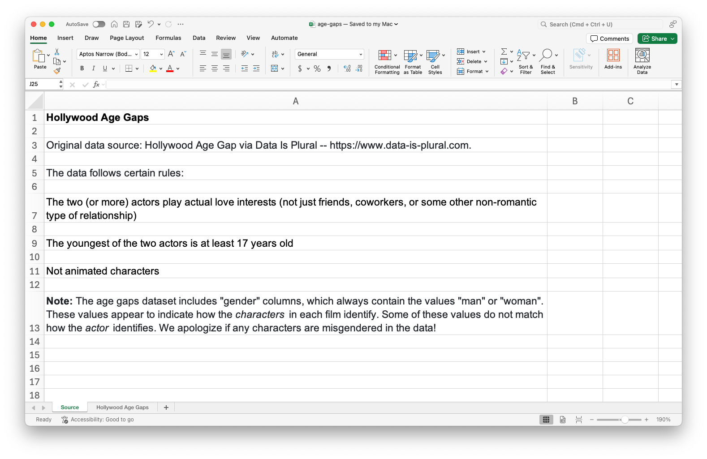
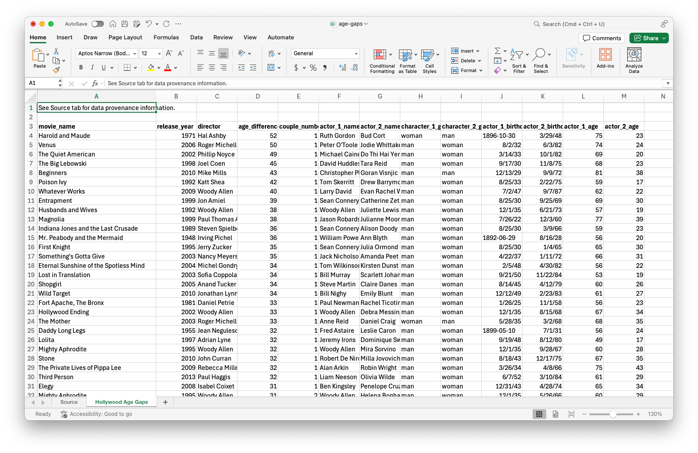

library(tidyverse)
library(readxl)AE 08: Age gaps + import
Suggested answers
Application exercise
Important
These are suggested answers. This document should be used as a reference only; it’s not designed to be an exhaustive key.
Packages
We will use the following two packages in this application exercise.
- tidyverse: For data import, wrangling, and visualization.
- readxl: For importing data from Excel.
Data
The data for this application exercise is from Data is Plural and it is on age gaps in Hollywood relationships.
The data follows certain rules:
- The two (or more) actors play actual love interests (not just friends, coworkers, or some other non-romantic type of relationship).
- The youngest of the two actors is at least 17 years old.
- Not animated characters.
The data are in an Excel file called age-gaps.xlsx in your data folder.
This is how the Excel file looks – it has two sheets, one with the data (called Hollywood Age Gaps) and one with information about the data (called Source). Additionally, the data sheet has some metadata at the top, above the column headers.


Import
Load the data from age-gaps.xlsx in your data and assign it to age_gaps. Confirm that this new object appears in your Environment tab. Click on the name of the object in your Environment tab to pop open the data in the data viewer.
age_gaps <- read_excel(
"data/age-gaps.xlsx",
sheet = "Hollywood Age Gaps",
skip = 2
)Subset
Create a subset of the data frame for heterosexual relationships on screen.
age_gaps_heterosexual <- age_gaps |>
filter(character_1_gender != character_2_gender)Split the data for heterosexual relationships into three – where the woman is older, where the man is older, where they are the same age. Save these subsets as three appropriately named data frames. Remember: Use concise and evocative names. Confirm that these new objects appear in your Environment tab and that the sum of the number of observations in the three new data frames add to the number of observations in the original data frame.
age_gaps_heterosexual <- age_gaps_heterosexual |>
mutate(
older = case_when(
character_1_gender == "man" & actor_1_age > actor_2_age ~ "man",
character_2_gender == "man" & actor_2_age > actor_1_age ~ "man",
character_1_gender == "woman" & actor_1_age > actor_2_age ~ "woman",
character_2_gender == "woman" & actor_2_age > actor_1_age ~ "woman",
actor_1_age == actor_2_age ~ "same"
)
)
woman_older <- age_gaps_heterosexual |>
filter(older == "woman") |>
select(!older)
man_older <- age_gaps_heterosexual |>
filter(older == "man") |>
select(!older)
same_age <- age_gaps_heterosexual |>
filter(older == "same") |>
select(!older)
nrow(age_gaps_heterosexual) == nrow(woman_older) + nrow(man_older) + nrow(same_age)[1] TRUEglimpse(woman_older)Rows: 185
Columns: 13
$ movie_name <chr> "Harold and Maude", "The Mother", "Tadpole", "The P…
$ release_year <dbl> 1971, 2003, 2002, 2020, 2013, 2006, 1999, 2003, 200…
$ director <chr> "Hal Ashby", "Roger Michell", "Gary Winick", "Ryan …
$ age_difference <dbl> 52, 33, 27, 22, 21, 20, 19, 18, 18, 17, 16, 15, 15,…
$ couple_number <dbl> 1, 1, 1, 1, 1, 1, 1, 2, 2, 2, 1, 1, 1, 1, 1, 1, 1, …
$ actor_1_name <chr> "Ruth Gordon", "Anne Reid", "Sigourney Weaver", "Me…
$ actor_2_name <chr> "Bud Cort", "Daniel Craig", "Aaron Stanford", "Keeg…
$ character_1_gender <chr> "woman", "woman", "woman", "woman", "woman", "woman…
$ character_2_gender <chr> "man", "man", "man", "man", "man", "man", "man", "m…
$ actor_1_birthdate <chr> "1896-10-30", "12932", "18179", "18071", "22253", "…
$ actor_2_birthdate <dttm> 1948-03-29, 1968-03-02, 1976-12-27, 1971-03-22, 19…
$ actor_1_age <dbl> 75, 68, 53, 71, 53, 37, 38, 57, 44, 44, 58, 41, 52,…
$ actor_2_age <dbl> 23, 35, 26, 49, 32, 17, 19, 39, 26, 27, 42, 26, 37,…glimpse(man_older)Rows: 917
Columns: 13
$ movie_name <chr> "Venus", "The Quiet American", "The Big Lebowski", …
$ release_year <dbl> 2006, 2002, 1998, 1992, 2009, 1999, 1992, 1999, 198…
$ director <chr> "Roger Michell", "Phillip Noyce", "Joel Coen", "Kat…
$ age_difference <dbl> 50, 49, 45, 42, 40, 39, 38, 38, 36, 36, 35, 35, 34,…
$ couple_number <dbl> 1, 1, 1, 1, 1, 1, 1, 1, 1, 1, 1, 1, 1, 1, 1, 1, 1, …
$ actor_1_name <chr> "Peter O'Toole", "Michael Caine", "David Huddleston…
$ actor_2_name <chr> "Jodie Whittaker", "Do Thi Hai Yen", "Tara Reid", "…
$ character_1_gender <chr> "man", "man", "man", "man", "man", "man", "man", "m…
$ character_2_gender <chr> "woman", "woman", "woman", "woman", "woman", "woman…
$ actor_1_birthdate <chr> "11903", "12127", "11218", "12291", "17350", "11195…
$ actor_2_birthdate <dttm> 1982-06-03, 1982-10-01, 1975-11-08, 1975-02-22, 19…
$ actor_1_age <dbl> 74, 69, 68, 59, 62, 69, 57, 77, 59, 56, 65, 66, 56,…
$ actor_2_age <dbl> 24, 20, 23, 17, 22, 30, 19, 39, 23, 20, 30, 31, 22,…glimpse(same_age)Rows: 30
Columns: 13
$ movie_name <chr> "10 Things I Hate About You", "A Happening of Monum…
$ release_year <dbl> 1999, 2017, 2018, 2013, 1999, 2010, 2002, 2002, 200…
$ director <chr> "Gil Junger", "Judy Greer", "Paul Feig", "David O. …
$ age_difference <dbl> 0, 0, 0, 0, 0, 0, 0, 0, 0, 0, 0, 0, 0, 0, 0, 0, 0, …
$ couple_number <dbl> 2, 2, 2, 3, 4, 1, 1, 2, 1, 2, 1, 5, 1, 2, 2, 5, 1, …
$ actor_1_name <chr> "Joseph Gordon-Levitt", "Common", "Henry Golding", …
$ actor_2_name <chr> "Larisa Oleynik", "Jennifer Garner", "Blake Lively"…
$ character_1_gender <chr> "man", "man", "man", "man", "woman", "woman", "woma…
$ character_2_gender <chr> "woman", "woman", "woman", "woman", "man", "man", "…
$ actor_1_birthdate <chr> "29634", "26371", "31813", "27059", "28899", "29473…
$ actor_2_birthdate <dttm> 1981-06-07, 1972-04-17, 1987-08-25, 1974-08-20, 19…
$ actor_1_age <dbl> 18, 45, 31, 39, 20, 30, 28, 33, 35, 31, 27, 31, 32,…
$ actor_2_age <dbl> 18, 45, 31, 39, 20, 30, 28, 33, 35, 31, 27, 31, 32,…Export
Write out the three new datasets you created into the data folder as CSV files.
write_csv(woman_older, file = "data/woman-older.csv")
write_csv(man_older, file = "data/man-older.csv")
write_csv(same_age, file = "data/same-age.csv")